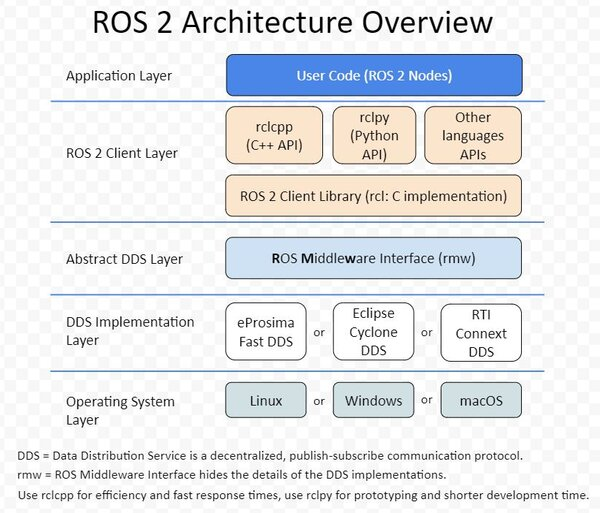

DDS
{kind=link}

The Data Distribution Service (DDS) is at the heart of the ROS2 architecture for managing communication between nodes.
DDS ensures: automatic discovery of publishers and subscribers on the network, quality of service (QoS) management, and message transport.
Thanks to DDS, ROS2 nodes can exchange data reliably, securely, and in real-time or pseudo real-time.
Key Features of DDS
Automatic discovery: No need to manually configure IP addresses or ports.
Quality of Service (QoS): Allows defining different levels of reliability, message lifetimes, etc.
Pub/sub: Subscription-publication model, nodes can publish and subscribe to the same topics without knowing each other directly.
DDS allows transparent and unified management of local IPC-based communication as well as network communication. DDS provides a single abstraction layer while ensuring compatibility between the two modes of communication and ensuring both a communication:
as real-time as possible,
reliable,
secure.

IPC and DDS
What is IPC?
Inter-Process Communication (IPC) encompasses all mechanisms and protocols that allow multiple processes to exchange data and coordinate their actions on the same machine. Among the most common techniques are shared memory, pipes, sockets, and message queues. By leveraging these mechanisms, it is possible to achieve very good performance in terms of latency and throughput, which is essential in systems where reaction time must be as short as possible (real-time or quasi real-time).
Key Aspects of IPC
Efficient local communication: IPC mechanisms such as shared memory, pipes, sockets, and message queues enable high-performance communication between nodes on the same machine, without the overhead associated with network communication.
Resource sharing: IPC offers the possibility to share resources (e.g., data buffers, synchronization primitives) to ensure coordination and collaborative processing between different components or processes.
Low latency: By dispensing with network protocols, IPC solutions allow for low-latency transmissions, thus meeting the strict constraints of certain robotic applications, particularly in real-time control or for rapid sensor data processing.
DDS arbitrates between IPC and network protocols
In the case of local communication (multiple nodes running on the same machine), DDS leverages IPC mechanisms to reduce latency and limit resource consumption. For communication across a distributed network, DDS relies on network protocols (TCP or UDP) to disseminate data between different systems, while maintaining the same principles of automatic discovery and Quality of Service (QoS).
DDS leverages these IPC mechanisms to ensure fast and efficient data exchange at the local level, while simultaneously providing a robust infrastructure for network communication.
DDS Implementations
To configure DDS in ROS2, you can set the environment variable RMW_IMPLEMENTATION (for ROS Middleware Implementation) to specify the DDS implementation to use (e.g., FastDDS (formerly Fast-RTPS), CycloneDDS, Connext, etc.).
See the documentation: working with different DDS
Example:
export RMW_IMPLEMENTATION=rmw_fastrtps_cpp ros2 run demo_nodes_cpp talker
Note
By default, ROS2 uses the FastDDS implementation from eProsima. FastDDS is an open-source implementation of the DDS standard maintained by the Eclipse Foundation through eProsima. It is possible to choose another implementation if it is installed on the system.